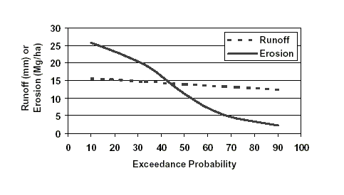

Rocky Mountain Research Station
Moscow Forestry Sciences Laboratory
1221 South Main Street, Moscow, ID 83843
https://forest.moscowfsl.wsu.edu/
| USDA Forest Service | Rocky Mountain Research Station | Moscow FSL | Soil and Water Engineering |
|---|
Abstract
Soil erosion by water is a complex process resulting from the interactions among a number of factors including weather patterns, soil properties, topography, and the influences of surface vegetation. Natural variability is a dominant characteristic of each of these factors, which makes predicting soil erosion rates difficult. In many forest conditions, and some rangeland conditions, erosion may be minimal under vegetated conditions unless the site is disturbed. Disturbances may be fire, logging, grazing, or severe precipitation events. The most extreme erosion rates occur when severe weather follows a major disturbance, particularly a severe wildfire.Keywords:We are developing an interface to aid in the analysis of erosion prediction following fire, or a similar major disturbance, in forests and rangelands. This paper addresses how we intend to incorporate the inherent variability associated with the predicted erosion rate, and how that variability is influenced by weather, spatial distribution of disturbances, and soil properties.
Authors
W.J. Elliot, Project Leader, Engineering Technology, Rocky Mountain Research Station, Moscow, Idaho.
P.R. Robichaud, Research Engineer, Engineering Technology, Rocky Mountain Research Station, Moscow, Idaho.
C.D. Pannkuk, Soil Scientist, Engineering Technology, Rocky Mountain Research Station, Moscow, Idaho.
INTRODUCTION
Soil erosion by water is a complex process resulting from the interactions among a number of
factors including weather patterns, soil properties, topography, and the influences of surface
vegetation. Natural variability is a dominant characteristic of each of these factors, which makes
predicting soil erosion rates difficult. In many forest conditions, and some rangeland conditions,
erosion may be minimal under vegetated conditions unless the site is disturbed. Disturbances
may be fire, logging, grazing, or severe precipitation events. The most extreme erosion rates
occur when severe weather follows a major disturbance, particularly a severe wildfire.
Natural resource managers need tools to aid in predicting soil erosion following wildfires to estimate potential loss of onsite productivity, or potential offsite damage from sediment to aquatic ecosystems or other beneficial uses dependent on quality water. Current erosion prediction tools generally are developed from agricultural erosion models, which are intended to provide long-term estimates of soil erosion rather than to evaluate short-term risks. These models typically provide an "average" erosion value, and do not give any estimate of the likelihood of major upland erosion occurring.
Process-based erosion models may provide a means for evaluating complex distributions of disturbance from a range of possible weather sequences, but the effort to parameterize such models makes them unsuitable for widespread application. However, they can play a role in assisting researchers to analyze some of the interactions between erosion factors.
We are developing an interface to aid in the analysis of erosion prediction following fire, or a similar major disturbance, in forests and rangelands. This paper addresses how we intend to incorporate the inherent variability associated with the predicted erosion rate, and how that variability is influenced by weather, spatial distribution of disturbances, and soil properties.
POST-FIRE EROSION FACTORS
Hillsides are more susceptible to erosion following a fire with decreased canopy and surface
residue, and in some cases a soil that is water repellent. Water repellency is a process that occurs
when volatilized hydrocarbons released by the fire condense and coat soil particles and
aggregates. These hydrocarbons repel water, which reduces infiltration rates and increases
runoff, erosion and sediment delivery from hillsides. With time, they are dissolved by
infiltrating water from rainfall and snowmelt. The reduction in vegetative canopy and surface
residue dramatically increases the potential for soil erosion by increasing the area susceptible to
raindrop impact and decreasing the potential for sediment deposition. In the year following a
fire, vegetation regrowth can be rapid because of increased availability of soil nutrients, and
decreased competition for sunlight and soil water by large trees. Hence, a burned site has a far
greater likelihood of erosion the year following a fire, with the risk dropping rapidly as
vegetation regrows, residue accumulates, and water-repellent chemicals break down and are
flushed from or translocated in the soil.
VARIABILITY IN SOIL EROSION
Variability has been identified as a dominant feature in soil erosion research. Coefficients of
variation and confidence intervals are the most familiar ways of reporting uncertainty, but
typically they are used only for comparisons. The concept of confidence intervals can be
extended to a complete probability distribution, which can describe a range of values, each value
with an associated probability of occurrence.
Weather Weather is highly variable from one year to the next. Years with a wet spring, encouraging considerable vegetation growth, followed by a prolonged, hot summer are more likely to have severe rangeland wild fires than are years with drier springs, or cooler or wetter summers. In forests, low snow pack years with hot dry springs and summers are more likely to have severe wild fires.
Following a fire, if the weather is very dry, there will be little natural or seeded vegetation regrowth and little soil recovery from water repellent conditions. This means that the site can remain susceptible to erosion for another season. If the weather is very wet, and the soils are water repellent, there is a high likelihood of severe soil erosion, but also there will be rapid vegetation recovery. Runoff from rainfall or rain-on-snow events will be much greater than runoff from melting snow. Generally, snowmelt rates are 1 to 2 mm hr-1, whereas rainfall rates up to 25 mm hr-1 are common.
Once a site has recovered, rainfall rates in excess of 50 mm hr-1 or total rainfall amounts greater than 100 mm within a day or two are necessary before any significant upland erosion will occur. This seldom happens in many forested areas.
Fire Fire effects on erosion are not homogenous. Fire severity is a description of the impact of a fire on the soil and its litter layer. The severity of a fire varies widely in space, depending on fuel load, moisture conditions and weather at the time of the fire, and the topography. This variability often creates variability in severity, leading to mosaic landscapes. Areas that are drier, such as those near ridge tops, and areas with greater amounts of fuel, may experience higher severity fires. Areas that are wetter, such as riparian areas, will likely have less severe fires (Robichaud and Miller 2000).
Soil and Spatial Variability Soil properties are naturally highly variable. Soil erosion experiments generally measure standard deviations in erodibility values similar to the means, and coefficients of variation greater than 30 percent are common (Elliot et al. 1989). Soils near the tops of ridges tend to be coarser grained and shallower, whereas soils at the bottoms of hill slopes may be finer grained, while flood plains vary widely depending on past geomorphic processes. After fires, this variability increases with variability in water repellency. The combined effects of a mosaic in fire severity and soil variability result in spatial variability of soil erodibility that has some degree of predictability, but a great deal of natural variability. Spatial variability analyses have shown that following some fires, there are definite trends in degree of fire severity, whereas the variability is evenly distributed on a hillslope or watershed following other fires (Robichaud and Miller 2000).
COMBINING VARIABILITIES
To understand the combined variabilities of climate, fire severity, and soil properties, numerous
analyses are carried out combining various storms or weather patterns, different distributions of
disturbance, and an array of soil properties that occur for a given severity of fire. It is
unreasonable to expect that a single estimate of soil erosion will capture the combined
probabilities. A better estimate of erosion is to provide a range of possible erosion predictions
using a Monte-Carlo approach (Haan 1994). The estimated erosion rate can then be expressed as
the probability of a given level of erosion being exceeded. One of the challenges for this type of
modeling is developing the statistical distributions of the dependent variables.
THE WEPP MODEL
We chose to use the Water Erosion Prediction Project (WEPP) model as the driver for the
proposed model. WEPP is a physically-based soil erosion model that describes the processes
that cause erosion (Laflen et al. 1997). As long as the processes are correctly described, and the
details of the site conditions can be described by the input variables, then the model can be
applied. For some runs, WEPP may require up to 400 input variables describing soil and
vegetative properties in great detail. Packaged with WEPP is a daily weather generator,
CLIGEN. CLIGEN stochastically generates daily weather sequences, which include the
occurrence of precipitation, and the amount and duration of precipitation on a wet day (Nicks et
al. 1995).
The WEPP model can be run either for single storms, with initial conditions such as soil water content, surface cover and soil erodibility specified for the storm, or in continuous mode where these values are automatically altered daily for a number of years of daily weather. Output options from WEPP include average annual runoff and erosion rates, annual erosion rates for the length of run, or event runoff and erosion rates for every runoff event during the period of simulation (Flanagan and Livingston 1995). The WEPP model has been applied to forest conditions with reasonable results, and the database to support the model is increasing (Elliot and Hall 1997).
PROPOSED SPATIALLY-VARIED MODEL
We are developing a soil erosion interface to use with the WEPP model, combined with a
stochastic input data set, to estimate the probability of a given level of soil erosion (Robichaud et
al. 2000). The user will provide inputs related to local climate, degree of fire severity, soil
texture, and topography. The user will be given the option to use a storm generated by the
interface, or to specify the desired storm amount and duration. Once the storm is selected, the
proposed interface will be run for a large number of spatial distributions and soil property
combinations, producing a range of possible soil erosion rates. The results will be presented to
the user in either a tabular or a graphical format.
Climate There are few weather stations in remote forested areas; a weather station some distance from the site of concern may not provide an adequate estimate for a storm. The CLIGEN weather generator has a database of over 1100 stations (Flanagan and Livingston 1995). We have expanded that database to over 2600 (Scheele et al. 2001). In addition, we have access to the PRISM database that contains monthly precipitation values for a 4 km grid covering the entire continental U.S. This grid will aid users to select a local climate for the CLIGEN weather generator (Scheele et al. 2001). CLIGEN can then generate a long term climate for running WEPP. To estimate the risk of a given size of storm, a 100-year climate file will be generated to run WEPP. WEPP will be run and the output for each event will be requested. The event output file will be sorted to determine the greatest, second greatest, fifth, tenth, and twentieth greatest erosion events. The storms for these events will provide the user with a choice of 5-, 10-, 20-, 50-, and 100-year return periods for storms. The user can select the desired return period storm, or specify a storm.
Soil Research has shown that it is not possible to statistically differentiate more than two levels of fire severity, which we define as low and high (Robichaud et al. 1993). The most important erosion prediction parameters affected by fire severity include percent ground cover, saturated hydraulic conductivity, and rill erodibility. Table 1 presents the range of values that have been measured in field studies. These values can be adjusted for different textures based on research observations (Robichaud 2000).
Spatial Spatial variability can be described with different distributions of severity on the landscape (figure 1). Figure 1 shows that the distributions can be grouped into categories of erosion risk. Most managers prefer to describe burned sites by these categories of erosion risk as "High," "Moderate" or "Low." In a previous study, Robichaud and Monroe (1997) showed that dividing the hill into three elements is adequate to describe the range of variation of surface erosion as influenced by spatial variation.
| Table 1. Range of erodibility values observed in field studies. | |||
| Fire Severity |
Remaining Ground Cover (percent) |
Saturated hydraulic conductivity (mm hr-1) |
Rill erodibility (s m-1) |
|---|---|---|---|
| Low | 40 -- 100 | 12 -- 30 | 3 x 10-5 -- 3 x 10-4 |
| High | 0 -- 60 | 6 -- 15 | 2.5 x 10-4 -- 2.5 x 10-3 |
| Figure 1. Spatial distributions of high (H) and low (L) fire severity describing low, moderate, and high erosion risk. |
RESULTS
Climate Variability Table 2 presents the results of a set of WEPP runs comparing different
storm events for a forest with a moderate erosion risk fire. Note that the events that experienced
the greatest erosion were not from the largest storms. Some of the largest storms occurred as
snowfall, while it is likely that most of the events that caused the greatest amounts of erosion and
sediment delivery were from rainfall on a snowpack. Table 2 also shows that the CLIGEN
storms were similar to the 6-hr storms predicted by the NOAA atlas (1973) for central Idaho.
Work is ongoing to alter the random number generators within CLIGEN, which will likely alter
the magnitudes of the largest storms (Flanagan et al. 2001).
| Table 2. Summary of events for a severely eroded hillslope from a 100-year WEPP run, with the Warren, ID climate, a slope length of 300 m, and a slope steepness of about 40 percent. | ||||||||||
| Event | By Detachment | By Delivery | By Precipitation | |||||||
| Date | Detachment | Precip | Date | Delivery | Precip | Precip (mm) | Date | Delivery | ||
| (m/d) | (Mg ha-1) | (mm) | (m/d) | (Mg ha-1) | (mm) | NOAA 6-hr | CLIGEN | (m/d) | (Mg ha-1) | |
| Largest | 3/30 | 97.5 | 35.3 | 4/28 | 3.39 | 15.0 | 53.3 | 64.7 | 3/4 | 0.00 |
| 2nd Largest | 4/1 | 93.5 | 30.2 | 3/15 | 2.52 | 19.5 | 45.7 | 53.4 | 12/4 | 0.00 |
| 5th Largest | 6/20 | 79.0 | 38.0 | 4/18 | 0.91 | 38.0 | 43.1* | 41.4 | 6/26 | 0.00 |
| 10th Largest | 5/16 | 61.5 | 20.4 | 5/22 | 0.41 | 30.2 | 38.1 | 34.9 | 2/9 | 0.00 |
| 20th Largest | 5/13 | 45.4 | 27.9 | 12/4 | 0.00 | 53.4 | 33.0 | 30.4 | 6/27 | 0.00 |
| 50th Largest | 3/29 | 22.4 | 11.1 | 7/28 | 0.00 | 26.0 | 25.4 | 24.5 | 2/15 | 0.00 |
| * NOAA 25-year event and CLIGEN 20-year event | ||||||||||
Spatial Variability Single sets of soil properties were defined for low and high severity, and a set of WEPP runs were carried out with the soil properties fixed to demonstrate the variability that can be modeled simply by altering the spatial distribution of the fire severity on the hillside (figure 1). Table 3 presents the results of this analysis for a 6-hr storm producing 60 mm of precipitation. A 60-mm rainfall event is about a 100-year event based on CLIGEN and the NOAA maps (table 2). Table 3 is ordered by upland erosion rates, and apparently the order is not the same for erosion as it is for sediment yield. A reasonable conclusion from this table is that the range of soil erosion rates due to spatial variability only is 55 to 77 Mg ha-1 for a high risk fire, 38 to 57 Mg ha-1 for a moderate risk fire, and 5 to 45 Mg ha-1 for a low risk fire from a 60-mm precipitation event.
| Table 3. Effects of the different spatial arrangements on runoff, hillside erosion, and sediment delivery for single sets of low and high severity soil properties. The table is in descending order by erosion rate. | ||||
| Erosion Risk | Distribution | Runoff (mm) |
Erosion (Mg ha-1) |
Sed Yield (Mg ha-1) |
|---|---|---|---|---|
| High | HHH | 22.7 | 77.0 | 73.0 |
| High | LHH | 20.9 | 66.2 | 61.5 |
| High & Mod | HHL | 17.2 | 56.8 | 30.7 |
| High & Mod | HLH | 17.5 | 54.5 | 52.1 |
| Mod & Low | LHL | 14.6 | 44.5 | 25.1 |
| Mod & Low | LLH | 14.9 | 38.4 | 36.7 |
| Low | HLL | 14.4 | 14.5 | 13.6 |
| Low | LLL | 11.9 | 4.6 | 4.4 |
Soil Variability Soil properties were varied over the range of values for low and high severity conditions presented in table 1, for a 100-m long, 40 percent slope hill, with a 60-mm, 6-hr storm. Figure 2 shows the results of these runs, with low severity predicted erosion rates varying from 0.06 to 3.8 Mg ha-1, and high severity rates from 2.3 to 25.8 Mg ha-1 for a 60-mm 6-hr storm. Note that the range of predicted erosion rates is greater than two magnitudes. As a comparison, observed erosion rates from a 13-mm storm following the spring after a high severity fire were zero and 0.19 Mg ha-1 in a study in progress in the Wenatchee National Forest in Central Washington, and annual totals were zero and 4.4 Mg ha-1 on a 30 percent slope for two adjacent plots in the Wallowa-Whitman National Forest in Eastern Oregon the first year after a severe fire. Figure 2 also shows that there is an overlap in the distributions of both runoff and erosion rates between high and low severity.
| Figure 2. Effects of fire severity on predicted ranges of runoff and soil erosion for a 100-m long, 40 percent slope hill, with a 60-mm, 6-hr storm. |
DISCUSSION
The results that are presented as a range in figure 2 can also be presented as exceedance values
(figure 3). One of the challenges for the proposed application is that by selecting a design storm,
the user has already limited predicted erosion to a very small set of storms. The results presented
in figure 3 are associated with a 100-year precipitation event. Figure 3 shows that there is a ten
percent chance in the year following a fire that erosion will exceed 26 Mg ha-1 storm, and a 90
percent chance that runoff will be less than 16 mm and erosion less than 26 Mg ha-1 from a 100
year storm event.
|  |
| Figure 3. Example of output from the proposed fire risk interface. |
INTERFACES
To incorporate climate variability, spatial variability, and soil variability into erosion prediction
is complex and time consuming with the current erosion models, including WEPP. Current
models do not incorporate the ability to carry out return period analysis of storms. For each
spatial arrangement and each soil condition a separate run or calculation is required. We are
currently developing an interface that will allow the user to select or specify a storm, a soil
textural category, a level of erosion risk, and slope length and steepness. The interface will then
carry out several hundred computer runs for the given level of fire risk, and present the user with
a table or graph such as that in figure 3, interpreting the results of the likelihood of soil erosion
exceeding a given amount (Robichaud et al. 2000).
SUMMARY
Variability is a dominant factor in soil erosion prediction on forest landscapes. Variables include
climate, soil properties, and the spatial distribution of fire severity. The range of erosion rates
can vary by over a magnitude due to spatial variability, and over two magnitudes due to soil
variability. A computer tool is under development to aid managers in evaluating the runoff and
erosion risks associated with wildfire for a given storm.
REFERENCES
Elliot, W. J., Liebenow, A. M., Laflen, J. M., Kohl, K. D., 1989,
A compendium of soil erodibility data from WEPP cropland soil field erodibility experiments 1987 & 88.
NSERL Report No. 3.
Columbus, OH: The Ohio State University, and W. Lafayette, IN: USDA Agricultural Research Service, 319 p.
Elliot, W. J., Hall, D. E., 1997, Water Erosion Prediction Project (WEPP) forest applications. General Technical Report INT-GTR-365. Ogden, UT: USDA Forest Service, Rocky Mountain Research Station, 11 p.
Flanagan, D. C., Livingston, S. J. (eds.), 1995, WEPP User Summary. NSERL Report No. 11, W. Lafayette, IN: National Soil Erosion Research Laboratory, 131 p.
Flanagan, D. C., Meyer, C. R., Yu, B., Scheele, D. L., 2001, Evaluation and enhancement of the CLIGEN weather generator. Proceedings of the ASAE International Symposium on Soil Erosion Research for the 21st Century. Jan. 3-5, 2001. Honolulu, HI. St. Joseph, MI: ASAE, 4 p.
Haan, C. T., 1994, Statistical Methods in Hydrology. Ames, IA: Iowa State University Press, 378 p.
Laflen, J. M., Elliot, W. J., Flanagan, D. C., Meyer, C. R., Nearing, M. A., 1997, WEPP--Predicting water erosion using a process-based model. Journal of Soil and Water Conservation 52(2), 96-102.
National Oceanic and Atmospheric Admin. (NOAA), 1973, NOAA Atlas 2, Volume V -- Idaho. Precipitation-frequency Atlas of the Western United States, Available online at <https://www.wrcc.dri.edu/pcpnfreq.html>.
Nicks, A. D., Lane, L. J., Gander, G. A., 1995, Chapter 2. Weather Generator. In Flanagan, D. C., Nearing, M. A., USDA-Water Erosion Prediction Project Hillslope Profile and Watershed Model Documentation. W. Lafayette, IN: USDA Agricultural Research Service, 2.1-2.22.
Robichaud, P. R., 2000, Fire effects on infiltration rates after prescribed fire in Northern Rocky Mountain forests, USA. Journal of Hydrology 231-232, 220-229.
Robichaud, P. R., Luce, C. H., Brown, R. E., 1993, Variation among different surface conditions in timber harvest sites in the Southern Appalachians. International Workshop on Soil Erosion, Proceedings. Moscow, Russia. West Lafayette, IN: The Center for Technology Transfer and Pollution Prevention, Purdue University, 231-241.
Robichaud, P. R., Miller, S. M., 2000, Spatial interpolation and simulation of post-burn duff thickness after prescribed fire. Accepted for publication in the International Journal of Wildland Fire.
Robichaud, P. R., Monroe, T. M., 1997, Spatially-varied erosion modeling using WEPP for timber harvested and burned hillslopes. Presented at the 1997 ASAE International Meeting, Minneapolis, MN. August 10-14. Paper No. 975015. St. Joseph, MI: ASAE, 8 p.
Robichaud, P. R., Elliot, W. J., Pierson, F. B., Wohlgemuth, P. M., 2000, Risk assessment of fuel management practices on hillslope erosion processes. In Neuenschwander, L. F., Ryan, K. C., (technical eds.) Proceedings from the Joint Fire Science Conference and Workshop. June 15-17, 1999. Boise, ID. Moscow, ID: University of Idaho, 58-65.
Scheele, D. L., Elliot, W. J., Hall, D. E., 2001, Enhancements to the CLIGEN weather generator for mountainous terrain. Proceedings of the ASAE International Symposium on Soil Erosion Research for the 21st Century. Jan. 3-5, 2001. Honolulu, HI. St. Joseph, MI: ASAE, 4 p.
Elliot, W.J.; Robichaud, P.R.; Pannkuk, C.D. 2001. A Probabilistic Approach To Modeling Erosion for Spatially-Varied Conditions. Proceedings of the Seventh Federal Interagency Sedimentation Conference, March 25 to 29, 2001, Reno, Nevada. Volume 2, Section VI, "Data Quality Assurance." p. VI-33 -- VI-40.
|
|
USDA Forest Service Rocky Mountain Research Station Moscow Forestry Sciences Laboratory 1221 South Main Street, Moscow, ID 83843 https://forest.moscowfsl.wsu.edu/ |
|